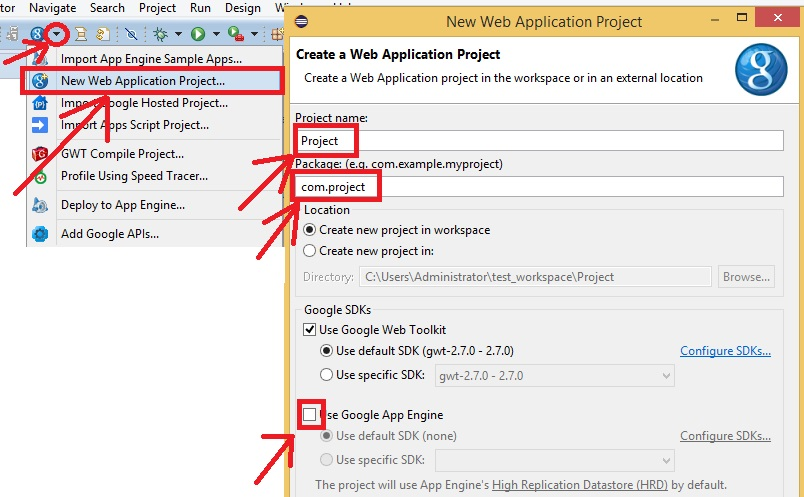
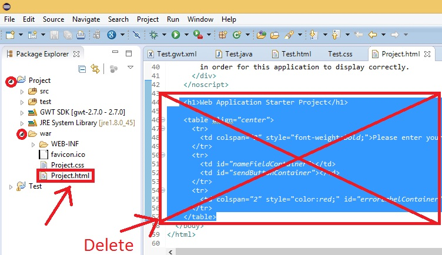
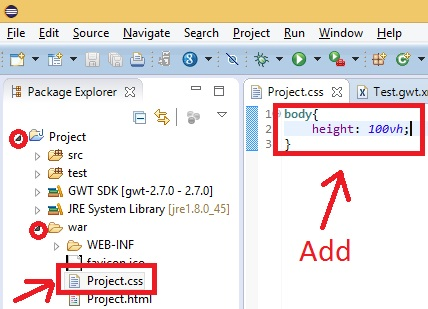
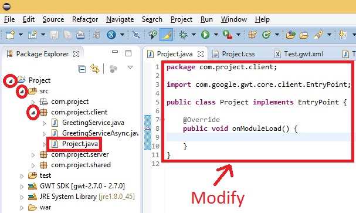
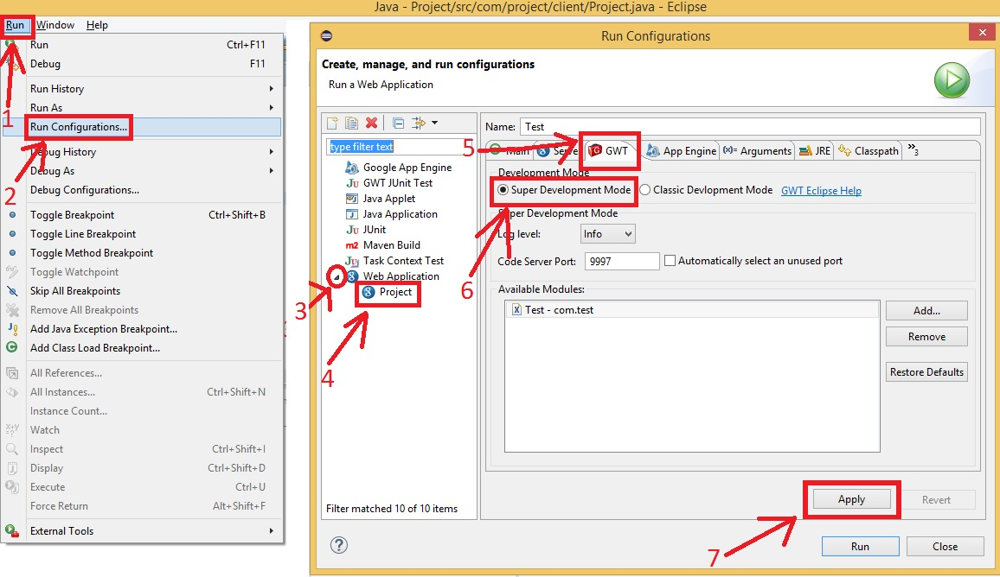
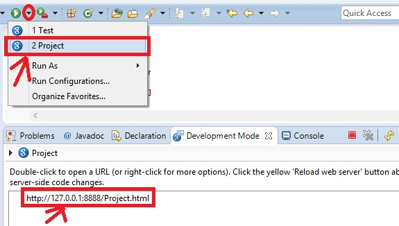

Create a new Web Application Project. For now, we wont use App Engine.
Clean up the HTML
Clean up the CSS and add a height to the body
Clean up the EntryPoint
Open Run -> Run Configurations -> [your application] -> GWT. Change the run configuration to SuperDevMode. Select Apply
To launch your application. Run with the green arrow.
If you want to terminate the session, press the red square. Also press the gray "X" to clean the console and check for other launches.